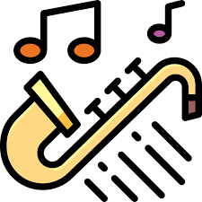

Le jazz est un genre musical originaire du Sud des États-Unis, créé à la fin du XIXe siècle et au début du XXe siècle au sein des communautés afro-américaines. Avec plus de cent ans d'existence, du ragtime au jazz actuel, il recouvre de nombreux sous-genres marqués par un héritage de la musique euro-américaine et afro-américaine, et conçus pour être joués en public. Il émerge à partir d'autres genres musicaux, dont le ragtime, la marche, le negro spiritual et le blues, et comporte des caractéristiques telles que l'utilisation fréquente de l'improvisation, de la polyrythmie, de la syncope, du shuffle, du scat et des notes bleues. En route, il emprunte de nombreux éléments à la musique populaire américaine (en) et à la tradition des brass bands. Couramment associé aux cinq instruments emblématiques du jazz — le saxophone, la trompette, le trombone, la clarinette et le piano —, le jazz mobilise cependant un grand nombre d'instruments différents, dont la guitare, la batterie, et la contrebasse.